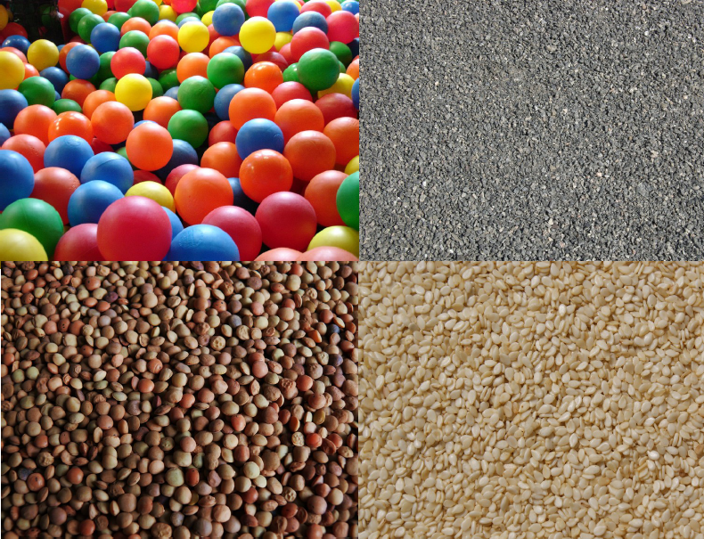
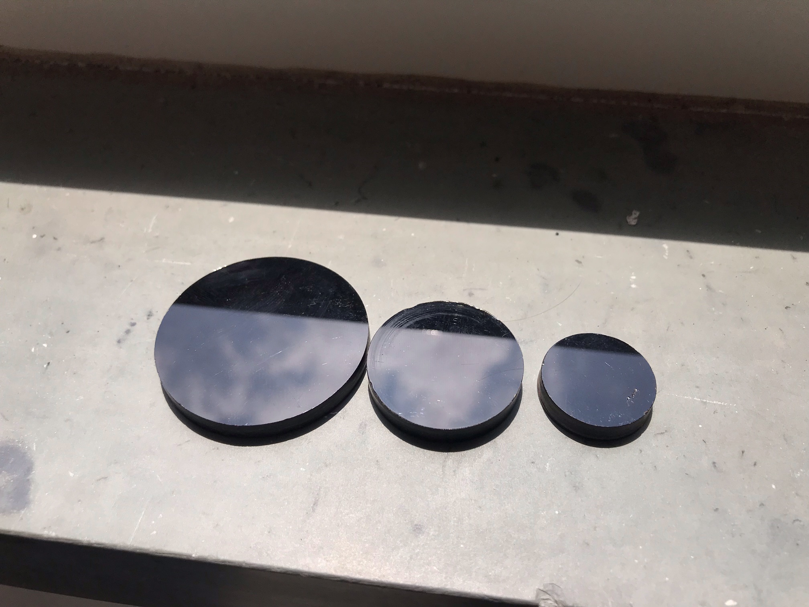
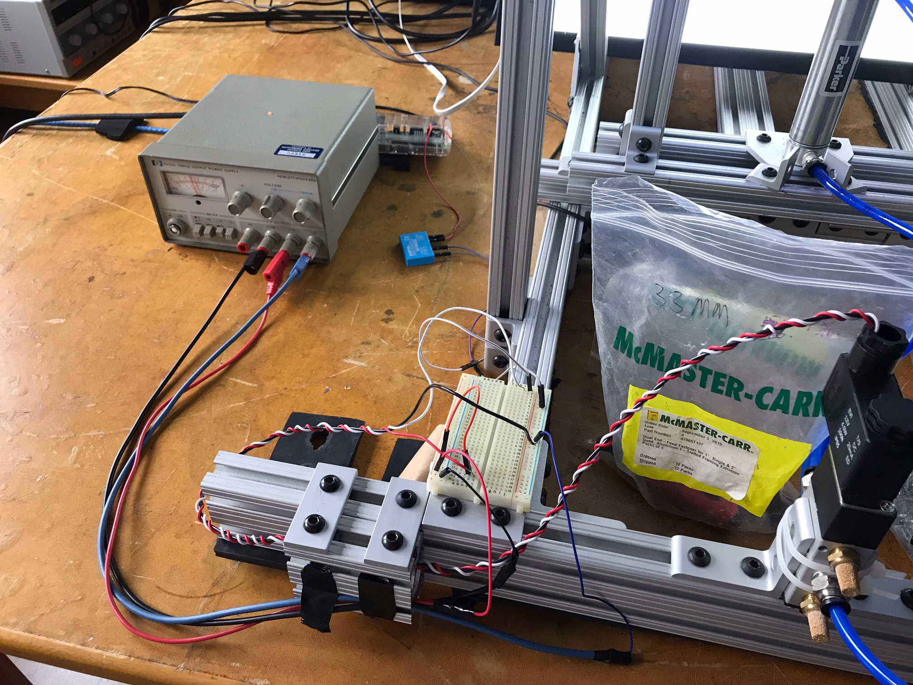
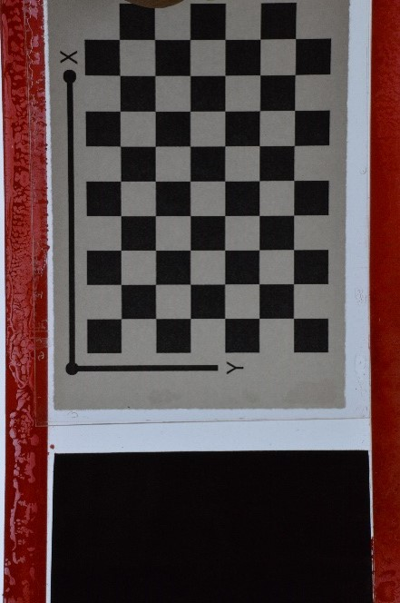
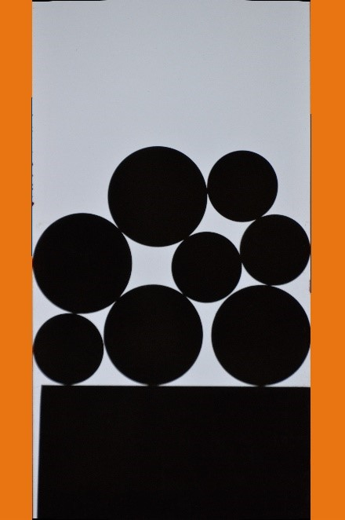
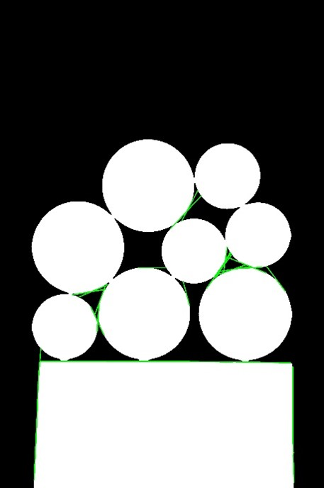
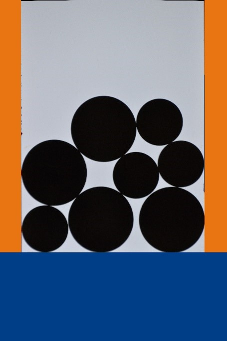

The Cross-Disciplinary Science Institute at Gettysburg College (X-Sig) was established to help our community of students be research ready, research active and research connected. The X-SIG oversees a set of initiatives designed to equip our students with the skills necessary for modern research, preparing them to integrate multiple disciplines in order to answer science’s most pressing questions.
Granular materials are made up of many microscopic particles. It can range from the sand on the beach to coffee beans in the bag. Although granular material observes the force laws of interactions, it behaves very differently under certain circumstances, they can flow like a liquid, compress like gas, or form a rigid structure like solids. One of the reasons that give the granular material such an interesting characteristic is the friction among all the particles and how they affect the total energy of the state when the particles are in a specific arrangement. Granular material systems also have similar characteristics with traditional molecular glass formers. In the past 30 years, researchers used techniques from statistical mechanics. However, a basic assumption of statistical mechanics is being made for all the past research: equiprobability of states within the granular systems. In our research, we will try to determine if this is a valid assumption or not. By designing and constructing apparatus that can generate new configurations of particles, we can investigate whether microstates are equiprobable. Developing codes and using computer-automated data acquisition. We will analyze the states of each particle and the states of the system by image analysis and photoelastic stress analysis to find the contact forces between particles. We will also investigate what are the factors that give the granular material the ability to exhibit special characteristics in different states.
We are examinating the equiprobable states of the granular by reshuffles the arcylic particles using pneumatic piston powered by compressed air.

The complete set up of the pneumatic piston setup consiststs of:
1. Air compressor
2. Pressure regulator
3. 5/2-way pneumatic valve
4. Pneumatic piston
5. Various quick connectors and air lines
Using the Raspberry Pi and a relay, we are able to control the pneumatic valve remotely, therefore automate the shuffling process.
The programming language for this project is Python. Using the OpenCV and SKImage for the image analysis, gPhoto2 for the DSLR control to captrue the image of the particles.
All the codes can be split into 2 sections. Data collection and data analysis.
Thanks to our automated piston setup and DSLR setup, we are able to collect one data point within 10 seconds. Which means we have a lot of data to work with. After taking the pictures, there are a couple things to do:
1. Undistort the images due to the lens distortion
2. Line detection for the floor and the sides
3. Circle detection
First, we need to un-distort the images we take. Distortion by the lens exists in most of the cameras. To have the best image for the computer to analyze, we need to undistort the images. To do so, we need to generate sets of calibration data. We take images of a checkerboard on a flat piece of acrylic. It is quite a repetitive process. We divide the frame up in 9 sections and take 45 images in total. Afterwards, we use the OpenCV library to generate the calibration data we need to undistort the images.
With the collaboration with Dr. Puckett, we are able separate our red edges from the images and remove the small blobs that came from the poor spray paint technique.
So, we feed this image into our Hough line detection algorithm within the OpenCV library. We can get two pairs of coordinates that tells us the lines the computer has found. The blue lines on both edges are the results from the Hough line detection. To make the circle detection algorithm more efficient, we masked the region outside of both edges with Gettysburg Orange.
After both edges are done, we move on to the horizontal floor detection. We separated the black channel of the image. As you can see, we have some problems. The particles are black as well. The line detection detected more lines within the particles. We decided not to paint the floor piece. Since the floor piece will be moving up and down within the box. We do not want to have paint rubbing within our walls. We can filter out these lines and look for the horizontal line we need. We achieve this by checking the slope, location, and the length of the lines. Our line we need should have a relatively low to zero slope, and it should be located in the lower portion of the image, and it should be the longest line.
This is our result of our line detection. Next step is the final circle detection.
